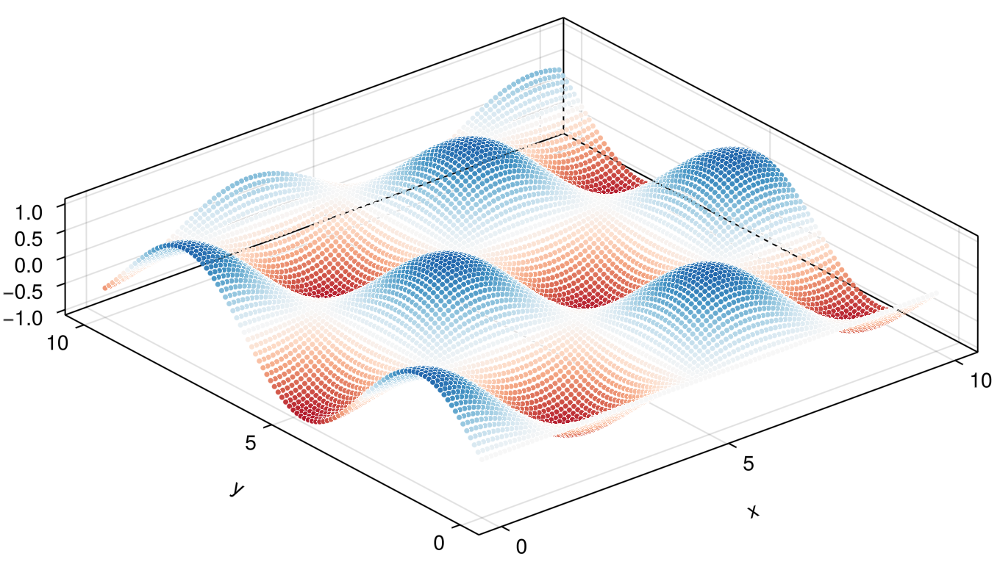
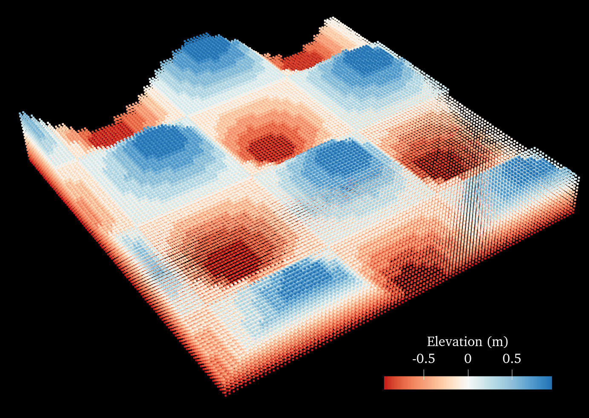
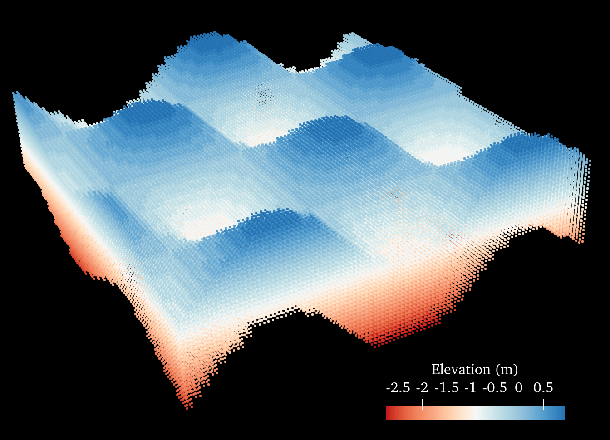
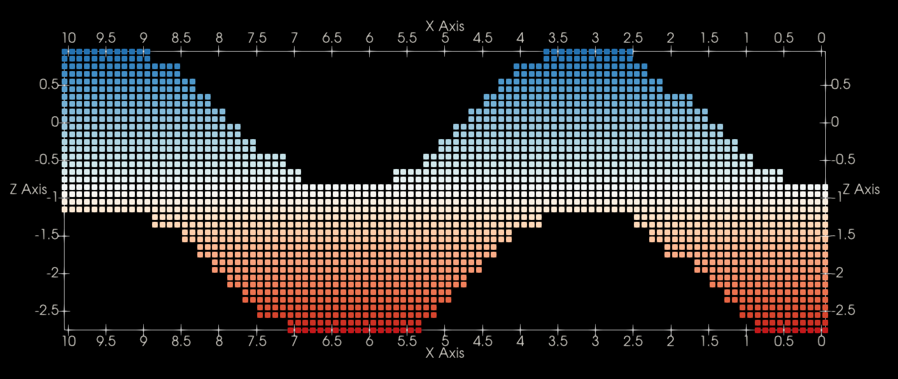
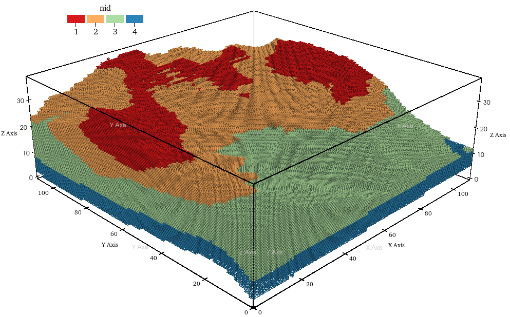
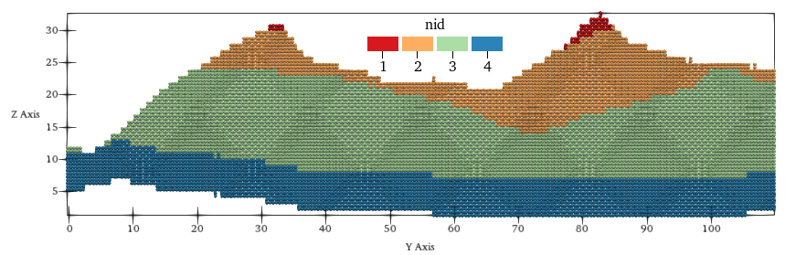

DEM
Here we use a function to generate a DEM sample file:
using MaterialPointGenerator
xy = meshbuilder(0:0.1:10, 0:0.1:10)
z = @. cos(xy[:, 1]) * sin(xy[:, 2])
data = [xy z]We can visualize data and obtain:

Fill to the plane
h = 0.2
bottom = -1.0
dem_0 = data
dem_1 = rasterizeDEM(dem_0, h)
pts = dem2particle(dem_1, h, bottom)
Fill to the plane with material id
h = 0.2
bottom = -1.0
dem_0 = data
dem_1 = rasterizeDEM(dem_0, h)
layer1 = data1
layer2 = data2
layer = [layer1, layer2]
pts, nid = dem2particle(dem_1, h, bottom, layer)Fill to another DEM
h = 0.2
dem_0 = data
dem_t = rasterizeDEM(dem_0, h)
dem_b = copy(dem_1)
dem_b[:, 3] .-= 2
pts = dem2particle(dem_t, h, dem_b)

Fill to another DEM with material id
h = 0.2
dem_0 = data
dem_t = rasterizeDEM(dem_0, h)
dem_b = copy(dem_1)
dem_b[:, 3] .-= 2
layer1 = data1 # material surface
layer2 = data2 # material surface
layer = [layer1, layer2]
pts, nid = dem2particle(dem_t, h, dem_b, layer)
profile:
